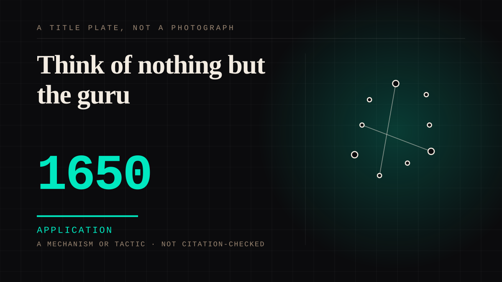

A mechanism or tactic · 1650 · Faith
Think of nothing but the guru
Guru devotion asks a disciple to hold one teacher in mind without pause - moving, walking, sleeping, sitting, happy or miserable - and the Tibetan tradition makes it indispensable to the path rather than optional. The Gelug-pa school's principal guru-puja was compiled in the mid-seventeenth century, which is the date this entry carries; the practice it regularises is older than the book.

**The oldest instruction in this corpus to attend to one person continuously, and it has a library behind it.** Capper records the tradition's own formula in full: "Moving, walking, sleeping, sitting, happy or miserable, continuously think of nothing but the guru!" - the sentence this entry's title takes its words from. What looks from outside like reverence is recorded inside as infrastructure: "Personal devotion to a guru in Tibetan Buddhism is, in contradistinction to some other forms of Buddhism, essential for traversing the liberative path to nirvana", the tradition's social text is the Fifty Verses of Guru-Devotion attributed to Asvaghosa, and at the field site Capper studied "All Buddhist practices at Siddha Gompa revolve around this devotion." The relationship is, in his words, "inherently hierarchical" - and the entry takes its date from the same tradition's book rather than from the practice, because the book can be dated and the practice cannot. Emory-Moore's structural analysis gives the Gelug-pa school's principal ritual text the Bla-ma mchod-pa, "Offering to the Spiritual Guide", "compiled by Losang Chokyi Gyaltsan (1570-1662) in the mid-seventeenth century", which is where 1650 comes from. The honesty note is on the entry rather than hidden: the practice is older than its text - Tsongkhapa's own instruction on how to rely on the teacher predates it, and Donovan's survey of all four Tibetan schools rests on guru-devotion rituals whose documented lineage runs back to Gling-ras-pa Pad-ma-rdo-rje (1128-1188), four and a half centuries before this entry's date. A dated text is an anchor, not a birth. **The tradition's own account refuses the reading that turns the disciple into a prop.** Capper is explicit that the hierarchy is instrumental rather than terminal: "in Tibetan Buddhist theory, enchantment exploits hierarchical relationships as a means, not an end", and "Lamas tirelessly reiterate that the goal of the practice is to become a lama oneself." His ethnography states the finding against the expected one: "Rather than being automatons for a charismatic leader, many of these Buddhists critically employ submission to their lama to attempt their own personal and religious empowerment" - and his record of what the hierarchy did to them is that it "aided, not stifled, their development of a sense of personal empowerment". Emory-Moore's structural reading supplies the mechanism underneath: guru yoga is "a system of exchange defined by a distinct logic: the binary of guru/disciple mediated by the gift (offerings given, blessings received)", inside a relation in which "the guru is seen to have subjugated that to which the disciple's identity remains subject". So the near side gives, asks and receives in a relationship it entered, and the asymmetry that remains is the one the entry is about: devotion sustained in one direction, by instruction, for life. **The counter-argument is that the relationship is unhealthy by design, and Capper records the critique without softening it.** Critics of the arrangement describe the dynamic as "inherently unhealthy for supposedly independence-minded Americans", and he notes that academic studies of it have often "arrive[d] at their conclusions by understanding submission to the guru as the goal" - the submission read as the point rather than as the means his fieldwork found. That is a real dispute about the arrangement's value and this entry does not settle it; what it attaches to is narrower and is present whichever side of the dispute is right. The instruction itself - continuous attention to one person who owes you nothing - is the most total demand for one-sided attention anywhere in this corpus: it does not ask for a reply, because the practice is the holding of the thought, and it is dated here from the book that first wrote the discipline down. The priest entry is the arrangement's neighbour and its contrast: "The most complete parasocial arrangement available and it includes a uniform, a script and a confession" - the guru has no uniform and no parish, which is precisely why the tie sits on the shelf for standing rather than for office.
Application. One-sided attachment put to work on purpose. Creator economies, community, fandom as infrastructure, and the things that genuinely help people. Not automatically good - a tool with an obvious use is a tool that will also get a bad one.
Consideration. The part where somebody stops and thinks. The research, the diagnosis, the ethics, the lawsuits, the regulators. Roughly fifty years of arguing with itself about whether this is a relationship.
Where it sits
1500 1500-1699 · 1650 1699
Provenance · 4 source record(s)
- unverifiedGuru devotion in the Tibetan tradition as this essay records it: personal devotion to a guru "essential for traversing the liberative path to nirvana" and distinguished on that point from other forms of Buddhism; the instruction "Moving, walking, sleeping, sitting, happy or miserable, continuously think of nothing but the guru!"; the tradition's social text as Fifty Verses of Guru-Devotion attributed to Asvaghosa; the lama-disciple relationship "inherently hierarchical"; "All Buddhist practices at Siddha Gompa revolve around this devotion"; the tradition's insistence that "the goal of the practice is to become a lama oneself"; the finding that the hierarchy "aided, not stifled" disciples' personal empowerment; and the record of disciples who "critically employ submission to their lama to attempt their own personal and religious empowerment" rather than serving as automatons. Read through a search index rather than fetched, so the record is unverified: a reader can open this page, this agent did not.Capper, D. S. (2004), "Enchantment with Tibetan Lamas in the United States", Journal of Contemporary Religion 19(2), 137-153 ↗
- unverifiedThe dating this entry rests on: the Gelug-pa school's principal ritual text, the Bla-ma mchod-pa ("Offering to the Spiritual Guide"), "compiled by Losang Chokyi Gyaltsan (1570-1662) in the mid-seventeenth century"; plus the structural reading of guru yoga as "a system of exchange defined by a distinct logic: the binary of guru/disciple mediated by the gift (offerings given, blessings received)" and the relation of standing recorded as "the guru is seen to have subjugated that to which the disciple's identity remains subject". Read through a search index rather than fetched, so the record is unverified: a reader can open this page, this agent did not.Emory-Moore, C. (2012), "The Systematic Dynamics of Guru Yoga in Euro-North American Gelug-pa Formations", master's thesis, University of Calgary ↗
- unverifiedThat devotion to the guru is a central feature of Tibetan Buddhism across the schools surveyed, that the guru held an exalted position in Hinduism and Indian Buddhism before it, and that the thesis's third chapter is the first complete translation of a ritual of guru devotion by Gling-ras-pa Pad-ma-rdo-rje (1128-1188) - the record that the practice's textual lineage runs to the twelfth century, well before this entry's date. Read through a search index rather than fetched, so the record is unverified: a reader can open this page, this agent did not.Donovan, M. A. (1986), "Guru devotion in Tibetan Buddhism", master's thesis, University of Calgary ↗
- unverifiedA structural analysis of the same guru-puja text this entry dates from, recorded for the reading it gives of the disciple's part in the ritual: what the disciple gives, asks for and receives from the guru. Read through a search index rather than fetched, so the record is unverified: a reader can open this page, this agent did not.CJBS, "Structural Analysis: Losang Chokyi Gyaltsan's Guru Puja" (2017) ↗
Not yet stood behind. The entry is real. A person has not read the citation and confirmed it, so treat the date as approximate until they do.
Connected · 3 out, 0 in
It sits in
The full timeline → · The database → · See it in the atlas →